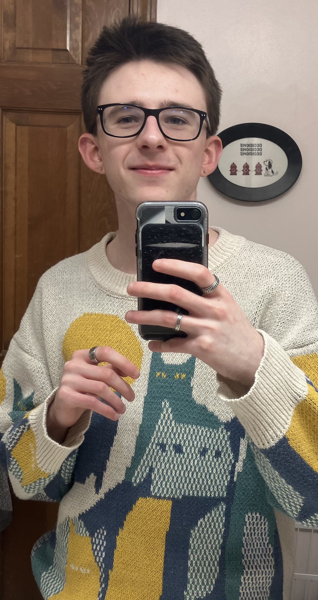

About
Hello, my name is Bryce Stelle. I'm currently an undergrad Computer Science / Software Engineering student at Rose-Hulman Institute of Technology.
Some hobbies I enjoy include doing puzzles, playing video games, playing pickleball, and making music or playing guitar.